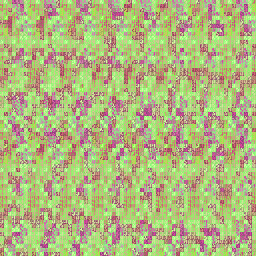
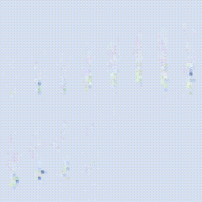
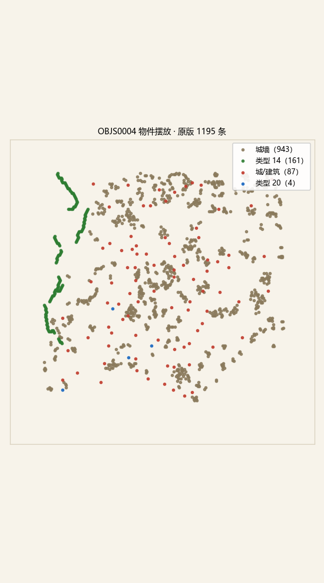

san11world · 动态素材
大地图上的两种动态素材，都靠引擎每帧更新、而不是靠贴图自身变化。水面是贴图帧动画，物件是 3D 模型姿态动画——下面是它们从资源包里还原出来的样子。
水面覆盖层 water.wft 是 8 张 DXT5 纹理，等于 2 种水型 × 每型 4 帧波动画。每帧循环推进，让河面海面看起来在流动。半透明是写在 alpha 通道里的：浅水几乎不透明、看得到河底泥沙，深水半透明、透出下面的地形。
浅水（帧 0–3）alpha ≈ 205 · 不透明

沙黄色，河底可见；颜色丰富所以纹理较大。
深水（帧 4–7）alpha ≈ 48 · 半透明

蓝青色，半透明覆盖在地形之上。
cell+0 存水动画相位、cell+2 存周期，每帧由 0x422da0 推进相位（add word [cell+0], cx），再按相位取帧。水型写在 cell+9 的 bit0–1，决定用浅水还是深水那组纹理。物件不是贴图，而是摆在地图上的 3D 模型（城墙、城、关、港）。它的「动」由 0x423230 每帧改模型姿态/矩阵实现，所以没有一张张可看的动画帧，只有一份摆放清单和一套模型。清单本身是静态的，先看它记录了什么。

1195 个物件在 256×256 格舞台上的位置（ou 半顶点坐标）。城墙沿城郭连成一圈，城/建筑散落在各州郡，类型 14 密集在中原腹地。
| 类型号 | 数量 | 含义（据反汇编） |
|---|---|---|
46 / 47 / 48 | 299 / 606 / 38 | 城墙（三档） |
0–7 | 87 | 城、关、港等建筑 |
14 | 161 | 未归类物件（非城墙、非建筑） |
20 | 4 | 少量特殊物件 |